This guide covers all of Midnight Tailoring. You'll find every weekly and one-time Knowledge source, profession equipment, renown-gated recipes, and full recipe lists for cloth armor, embellishments, spellthread, bags, and House Decor.
If you need help leveling Tailoring from 1 to 100, check out my leveling guide:
Midnight Tailoring Leveling Guide
Midnight Tailoring Changes
If you played Tailoring in The War Within, most of the system is the same. Only a few things changed, so you won't have trouble adapting.
-
Artisan Tailor's Moxie - The BoP currency
 Artisan's Acuity that you got from earning profession Knowledge in The War Within has been changed to a profession-specific currency,
Artisan's Acuity that you got from earning profession Knowledge in The War Within has been changed to a profession-specific currency,  Artisan Tailor's Moxie. You can now only use it for Tailoring-specific recipes.
Artisan Tailor's Moxie. You can now only use it for Tailoring-specific recipes.
- No More Bronze Quality Reagents - Bronze-quality reagents and consumables have been removed in Midnight. All reagents and consumables now only have two quality levels: Silver and Gold. This means you will always get at least a Silver-quality item, and you can use your Concentration right away to craft Gold-quality items. Weapons, armor, and profession equipment still have 5 ranks.
- Epic Profession Tools - New Epic-quality profession tools are available in Midnight, providing more secondary stats than Rare tools. Both Epic and Rare tools provide the same base Skill bonus.
- No More Unraveling - The cloth unraveling step from The War Within (turning cloth into spools before crafting) has been removed. One less intermediate step to deal with.
Weekly Tailoring Knowledge in Midnight
In Midnight, there are four weekly sources of profession knowledge, allowing you to earn approximately 25-30 Knowledge Points every week. This is an estimate, though. Patron Orders require crafting specific items at high quality, so your actual weekly total will be lower if you don't have the recipe or can't hit the quality target.
| Source | Details |
|---|---|
| Patron Crafting Orders (~24 KP) | You earn the majority of your weekly knowledge points by completing Patron Crafting Orders. You will receive |
| Weekly Quest (2 KP) | Your profession trainer will offer a weekly quest that asks you to complete 3 Crafting Orders. This rewards a |
| Weekly Drops (4 KP) | Each week, you can loot 1 of each of the following items from treasures scattered around the new zones: |
| Inscription Treatise (1 KP) | To get a |
| Darkmoon Faire (3 KP / month) | Once a month, the Darkmoon Faire comes to town and you can complete a quick profession quest for +3 Knowledge Points and +2 Profession Skill. It's not a weekly source, but don't skip it. The Faire starts on the Sunday before the first Monday of each month. |
| Catch-up System | If you fall behind or start late, you will receive |
One-Time Tailoring Knowledge in Midnight
These are one-time sources of Tailoring Knowledge that you can collect once per character. Grab them as soon as you can because they are the fastest way to get Knowledge Points early on.
Renown Knowledge Book
 Skill Issue: Tailoring is sold by the Silvermoon Court Renown Quartermaster Caeris Fairdawn in Eversong Woods.
Skill Issue: Tailoring is sold by the Silvermoon Court Renown Quartermaster Caeris Fairdawn in Eversong Woods.
Midnight Tailoring Treasures
There are 8 Tailoring treasures in Midnight. Collecting them provides 24 Knowledge Points in total. You will find them in Silvermoon City, Eversong Woods, Zul'Aman, Harandar, and Voidstorm.
| Treasure Name | Zone | Map |
|---|---|---|
| A Really Nice Curtain | Silvermoon City | |
| Particularly Enchanting Tablecloth | Silvermoon City | |
| Sin'dorei Outfitter's Ruler | Eversong Woods | |
| Artisan's Cover Comb | Zul'Aman | |
| Wooden Weaving Sword | Harandar | |
| A Child's Stuffy | Harandar | |
| Book of Sin'dorei Stitches | Voidstorm | |
| Satin Throw Pillow | Voidstorm |
TomTom Waypoints & Treasure Check Macro
TomTom Waypoints
/ttpaste in-game/way #2393 35.9, 61.3 A Really Nice Curtain /way #2393 31.8, 68.2 Particularly Enchanting Tablecloth /way #2395 46.3, 34.8 Sin'dorei Outfitter's Ruler /way #2437 40.5, 49.4 Artisan's Cover Comb /way #2413 69.8, 51.0 Wooden Weaving Sword /way #2413 70.5, 50.9 A Child's Stuffy /way #2444 62.0, 83.6 Book of Sin'dorei Stitches /way #2444 61.6, 85.0 Satin Throw Pillow
Treasure Check Macro
true = collectedTailoring Specializations
There are four specialization trees available. You will unlock access to them at Tailoring skill levels 25, 50, 60, and 75.
- Sin'dorei Finery - Epic cloth armor recipes.
- Nimble Needlework - Daily bolt cooldowns, embellished cloth gear (cloaks, bracers, treads), and rare cloth drops from mob farming.
- Fabric Specialist - Increases cloth drop rates while farming, also has some crafting stats.
- Fiber Arts - Skill bonus for all Tailoring recipes plus crafting stats.
I have a separate guide that walks through the best builds for each playstyle with step-by-step Knowledge Point allocation.
Midnight Tailoring Specialization Guide & Best Builds
Profession Equipment
Profession Gear for Tailors in Midnight
Tailors can craft their own robe accessory, but you will need to get the fabric cutters from an Engineer and the needle set from a Blacksmith. The table below lists all three pieces of Tailoring profession equipment.
| Slot | Crafted By | Green Quality | Blue Quality | Epic Quality |
|---|---|---|---|---|
| Tool | Engineering | Farstrider Fabric Cutters | Sin'dorei Snippers | Self-Sharpening Sin'dorei Snippers |
| Accessory | Blacksmithing | 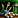 Thalassian Needle Set |
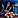 Sun-Blessed Needle Set |
Sunforged Needle Set |
| Accessory | Tailoring |
Craftable Profession Equipment
Tailors can craft profession equipment for Alchemy, Cooking, Enchanting, Fishing, Herbalism, and Tailoring.
Green Recipes
Green quality profession equipment is not soulbound, so you can craft and sell them on the Auction House. You learn these recipes from the profession trainer.
Blue and Purple Recipes
Recipes for the Blue and Epic quality equipment are sold by Deynna in Silvermoon City for 150  Artisan Tailor's Moxie each. The crafted items are Soulbound, so you cannot sell them on the Auction House. You must use the Crafting Order system to craft them for other players.
Artisan Tailor's Moxie each. The crafted items are Soulbound, so you cannot sell them on the Auction House. You must use the Crafting Order system to craft them for other players.
Both Epic and Blue profession gear provide the same Skill bonus. The Epic versions only offer higher secondary stats.
Renown Recipes
Tailoring has a couple of recipes from Renown vendors. You need Renown Rank 5 with the corresponding faction to buy them.
| Recipe | Description | Faction | Vendor |
|---|---|---|---|
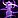 Arcanoweave Spellthread |
Epic leg enchant | Silvermoon Court (Rank 5) | Caeris Fairdawn |
| Lush Telogrus Carpet | House Decor | The Singularity (Rank 5) | Void Researcher Anomander |
Cloth Armor
Here is the full list of new cloth armor sets available in Midnight. Most of the Rare gear is learned from your trainer and is great for leveling. The high-end Epic pieces are locked behind Specializations, so you'll need to spend your Knowledge Points wisely to unlock the specific slot you want to craft.
| Recipe | Slot | Source |
|---|---|---|
| Courtly Helm | Head | Trainer (25) |
| Courtly Shoulders | Shoulder | Trainer (30) |
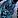 Courtly Cloak |
Back | Trainer (15) |
| Courtly Robes | Chest | Trainer (30) |
| Courtly Wrists | Wrist | Trainer (5) |
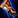 Courtly Gloves |
Hands | Trainer (15) |
| Courtly Belt | Waist | Trainer (10) |
| Courtly Pants | Legs | Trainer (20) |
| Courtly Slippers | Feet | Trainer (15) |
| Recipe | Slot | Source |
|---|---|---|
| Martyr's Crown | Head | Spec: Sin'dorei Finery |
| Martyr's Mantle | Shoulder | Spec: Sin'dorei Finery |
| Adherent's Silken Shroud | Back | Spec: Sin'dorei Finery |
| Martyr's Vestments | Chest | Spec: Sin'dorei Finery |
| Martyr's Bindings | Wrist | Spec: Sin'dorei Finery |
| Martyr's Gloves | Hands | Spec: Sin'dorei Finery |
| Martyr's Waistwrap | Waist | Spec: Sin'dorei Finery |
| Martyr's Leggings | Legs | Spec: Sin'dorei Finery |
| Martyr's Slippers | Feet | Spec: Sin'dorei Finery |
| Recipe | Source |
|---|---|
| Thalassian Competitor's Cloth Hood | Vendor: Mirvedon (Silvermoon City) |
| Thalassian Competitor's Cloth Shoulderpads | Vendor: Mirvedon (Silvermoon City) |
| Thalassian Competitor's Cloth Cloak | Vendor: Mirvedon (Silvermoon City) |
| Thalassian Competitor's Cloth Tunic | Vendor: Mirvedon (Silvermoon City) |
| Thalassian Competitor's Cloth Bands | Vendor: Mirvedon (Silvermoon City) |
| Thalassian Competitor's Cloth Gloves | Vendor: Mirvedon (Silvermoon City) |
| Thalassian Competitor's Cloth Sash | Vendor: Mirvedon (Silvermoon City) |
| Thalassian Competitor's Cloth Leggings | Vendor: Mirvedon (Silvermoon City) |
| Thalassian Competitor's Cloth Treads | Vendor: Mirvedon (Silvermoon City) |
Wardrobe Enhancements
These are green-quality cosmetic capes learned from the trainer at skill level 50.
| Recipe | Source |
|---|---|
| Blood-Tempered Cape | Trainer (50) |
| Farstrider's Embroidered Cover | Trainer (50) |
| Scout's Cape | Trainer (50) |
| Silvermoon Agent's Drape | Trainer (50) |
| Smuggler's Cloak | Trainer (50) |
| Spellbreaker's Shroud | Trainer (50) |
Embellishments
Embellishments are special items with unique effects. You can wear up to 2 embellished items at a time. These are some of the most valuable crafts for Tailors because every cloth-wearing class wants them for endgame content.
Arcanoweave Garments
Arcanoweave pieces are part of the Arcanoweave Trappings set (Bracers, Cloak, Treads). The Arcanoweave Cord is a standalone embellishment with its own proc.
| Recipe | Effect | Source |
|---|---|---|
| Arcanoweave Bracers | Arcanoweave Trappings set | Spec: Nimble Needlework |
| Arcanoweave Cloak | Arcanoweave Trappings set | Spec: Nimble Needlework |
| Arcanoweave Cord | Proc: +Mastery | Drop: Heavy Trunk (Delves) |
| Arcanoweave Treads | Arcanoweave Trappings set | Spec: Nimble Needlework |
Sunfire Silk Garments
Sunfire Silk pieces are part of the Sunfire Silk Trappings set (Bracers, Cloak, Treads). The Sunfire Sash is a standalone embellishment with a damage proc.
| Recipe | Effect | Source |
|---|---|---|
| Sunfire Bracers | Sunfire Silk Trappings set | Spec: Nimble Needlework |
| Sunfire Cloak | Sunfire Silk Trappings set | Spec: Nimble Needlework |
| Sunfire Sash | Proc: Radiant damage | Drop: Restless Heart (Windrunner Spire) |
| Sunfire Treads | Sunfire Silk Trappings set | Spec: Nimble Needlework |
Optional Reagents (Linings)
Linings are optional reagents that add the embellishment effect to crafted cloth gear. You can use them in Crafting Orders or when recrafting items.
| Recipe | Effect | Source |
|---|---|---|
| Adds Arcanoweave embellishment | Drop: Degentrius (Magisters' Terrace) | |
| Adds Sunfire embellishment | Drop: Heavy Trunk (Delves) |
Spellthread & Consumables
Spellthread is a leg enchant that only Tailors can craft. These are always in high demand, especially the epic versions.
| Recipe | Effect | Source |
|---|---|---|
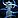 Bright Linen Spellthread |
+Intellect | Trainer (35) |
| Arcanoweave Spellthread | +Intellect, +max mana | Vendor: Caeris Fairdawn (Eversong Woods) |
| +Intellect, +Stamina | Drop: Fallen-King Salhadaar (The Voidspire) |
Reagents & Bags
In The War Within, you had to unravel raw cloth into spools first, then craft the spools into bolts. That step is gone in Midnight. You now craft bolts directly from cloth, which is one less intermediate step.
The two basic bolts (Bright Linen Bolt and Imbued Bright Linen Bolt) can be crafted any time. The Arcanoweave Bolt and Sunfire Silk Bolt are daily cooldown crafts, similar to Alchemy transmutes. You can only craft one of each per day, and they are used in almost every high-end recipe: embellishments, bags, spellthreads, and epic gear all require them. Because of this, the cooldown bolts will always be in demand and are one of the best passive income sources for Tailoring alts.
Woven Cloth
| Recipe | Source |
|---|---|
| Bright Linen Bolt | Trainer (1) |
| Trainer (25) | |
| Spec: Nimble Needlework | |
| Spec: Nimble Needlework |
Embroidered Bags
| Recipe | Source |
|---|---|
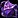 Imbued Bright Linen Backpack |
Trainer (35) |
| Trainer (35) | |
| Arcanoweave Reagent Rucksack | Trainer (50) |
| Sunfire Silk Backpack | Trainer (50) |
House Decor
Tailors can craft various furniture and decorations for player housing. These recipes come from different sources across the Midnight zones.
| Recipe | Source |
|---|---|
| Chic Silvermoon Pillow | Vendor: Deynna (Silvermoon City) |
| Lush Telogrus Carpet | Vendor: Void Researcher Anomander (Voidstorm) |
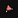 Luxurious Silvermoon Lounge Cushion |
Drop: Eversong Treasures |
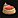 Plush Silvermoon Bed |
Vendor: Deynna (Silvermoon City) |
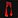 Silvermoon Curtains |
Quest: Clothes Make the Man |
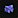 Voidstrider Saddlebag |
Drop: Victorious Stormarion Pinnacle Cache |